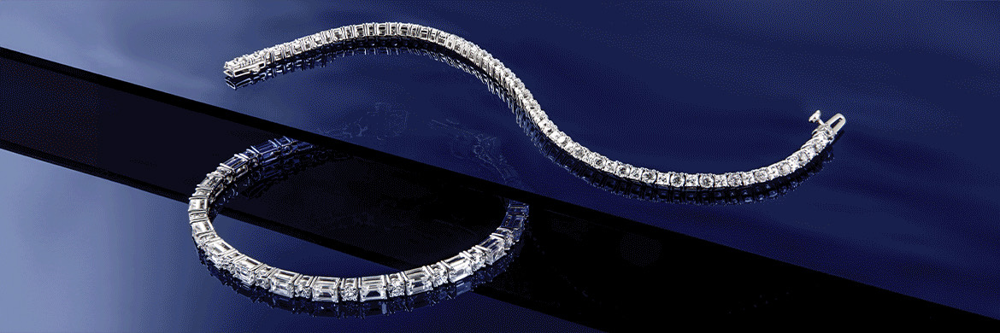
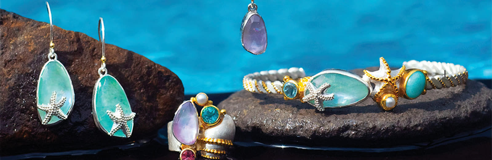
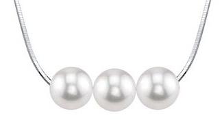
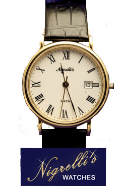

Collections & services
Everything fromfashion to fine.
Bridal rings, lab-grown diamonds, fine jewelry, Citizen watches and the services that keep them shining. If it isn't in the case, Nigrelli's can make it or order it.

Engagement & bridal
One of the largest bridal collections in the area.
Nigrelli's carries one of the largest men's and women's bridal ring collections in the area, and can custom make or order any diamond setting or semi-mounting. Browse the most popular styles from Unique Settings; if you find something you like, Nigrelli's will make it or order it for you if it isn't already in stock.
- Solitaires
- Halo
- Three stones
- Semi-mounts
- Fancy
- Antique
Lab-grown diamonds
Genuine diamonds, modern values.
Lab-grown diamonds offer the same brilliance, sparkle and durability as natural diamonds, at a more accessible price. Created in controlled environments, they're also a sustainable and ethical choice.
Drop in and see what's in stock. If it isn't, Nigrelli's can order just about anything you can imagine.



Fine & fashion jewelry
The right looks, styles and colors.
From everyday sterling to fine gold and diamonds, the cases on High Street are stocked with pieces from the makers our customers ask for.
Add-a-Pearl
One memory at a time.
Customers love the “Add a Pearl” cultured pearl necklaces. Add pearls on her birthdays, holidays and most special occasions, and by her wedding day she'll have a complete pearl necklace, created by those who love her most dearly. Every pearl holds a meaning.
Looking for something personal? Ask about engravables from Rembrandt and Midas.

Watches
Citizen, 40 Nine & Nigrelli's own.
- Rhode Island's Elite Citizen watch dealer, with the largest selection of Citizen watches in the area. Come see the inventory, or choose from over 300 models and Nigrelli's will order it.
- Citizen's exclusive Thin Blue Line and Thin Red Line watch dealer in RI.
- Nigrelli's Jewelry watches: Swiss-made quartz and mechanical watches with fine cases, bands and Swiss jeweled movements, and the Nigrelli's name on the dial. Every one comes with a free battery for life.
- The new and exciting 40 Nine line.



Services
Service after the sale matters most.
It's the most important thing the Nigrelli family has learned on High Street.
Same-day repairs
Jewelry repairs done the same day.
Engraving
Make a ring, pendant or gift personal.
Watch batteries
And a free battery for life with any Nigrelli's watch.
Custom & special orders
Settings, semi-mounts and lab-grown pieces made or ordered for you.
We buy gold & silver
Gold in any condition, sterling silver, flatware, coins and jewelry.
Gift certificates
When you'd rather let them choose.
Good to know
Questions, answered.
Can you order a ring I don't see in the case?
Yes. Nigrelli's can custom make or order any diamond setting or semi-mounting. If you find something you like, they will make it or order it for you if it isn't already in stock.
Do you carry lab-grown diamonds?
Yes. Drop in to see what's in stock: earrings, bracelets, rings, studs and pendants. If it isn't in stock, Nigrelli's can order just about anything you can imagine.
Do you do repairs and engraving?
Yes. Nigrelli's offers same-day repairs, engraving and watch batteries.
Do you buy gold?
Yes. Nigrelli's buys gold in any condition, plus sterling silver, flatware, coins and jewelry.
Which watches do you sell?
Citizen (Nigrelli's is Rhode Island's Elite Citizen watch dealer and the exclusive Thin Blue Line and Thin Red Line dealer in RI), 40 Nine, and Nigrelli's own Swiss-made watches with a free battery for life.
What are your hours?
Tuesday to Friday 10:00 am to 4:00 pm, Saturday 10:00 am to 3:00 pm. Closed Sunday and Monday.